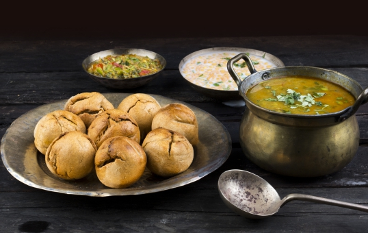

Dal Baati Choorma:
The Rajasthanis specialise in serving sweet and savoury dishes in combination that are a sheer delight for your taste buds. Dal, or lentil curry, is served with Bhatti, a roundel of stuffed flour that's baked in a charcoal fire or oven.
Choorma is a sweet dish made with flour, jaggery or sugar and ghee.